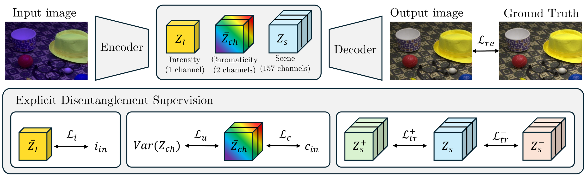

2
Capturing an image in a low-light environment produces a weak, noisy sensor signal. Low-light image enhancement (LLIE) aims to restore it. Auto white balance (AWB) is also required for every image, and the same noisy signal degrades its ability to infer the scene illuminant. LLIE is typically performed first, followed by AWB, but this strategy remains largely unexamined because existing low-light datasets span a narrow range of illuminants and lack illuminant ground truth for evaluating AWB. We address this with CHROMA-MILL, a RAW dataset of 50 scenes captured with a DSLR and smartphone under four calibrated illuminants at eleven intensity levels. Because light is additive, we blend these captures in the linear RAW domain to synthesize physically valid illuminant mixtures with exact chromaticity ground truth. Benchmarking on this data, we find joint correction is best, and introduce CTI-Retinexformer, which supervises an illumination map, a chromaticity prediction, and an illumination-invariant scene embedding, outperforming the best cascade by 0.7 dB PSNRL and 1.1 ΔE00.
CHROMA-MILL extends the MILL capture protocol along the color axis. We captured 50 scenes in RAW with a Nikon D5200 and a Samsung Galaxy S7, with fixed camera settings, under programmable LEDs: a red, a green, a blue and a white light, each at eleven intensity levels. Level 11 is the reference and the other ten levels are the low-light inputs. The scenes are split into 30 for training, 12 for validation and 8 for testing, with no objects shared between splits.
Every input has three ground truths: the white light at the same level (white balance only), the same light at Level 11 (enhancement only), and the white light at Level 11 (both). Since the captures are linear and aligned, we can also mix the lights of a scene to get new illuminants with a known chromaticity. This gives 48 illuminant conditions per level.
CTI-Retinexformer builds on Retinexformer and TI-Retinexformer. TI-Retinexformer splits the bottleneck of the network into an intensity channel and a scene embedding. We extend this split to color: the 160 bottleneck channels become one intensity channel, two channels that predict the chromaticity of the illuminant, and a 157-channel scene embedding.
Each part has its own loss. The intensity channel predicts the input level. The chromaticity channels predict the CIE xy of the light, and are pushed to be uniform over the image. A triplet loss keeps the scene embedding the same when only the light changes. All of them are added to an L1 reconstruction loss against the ground truth.

We compare against cascades of a low-light enhancer (Retinexformer, TI-Retinexformer, DarkIR, MIRNet and PromptNorm) and a white-balance method (DWB, FC4, FFCC and RL-AWB), all fine-tuned on CHROMA-MILL and run in both orders. On the DSLR test set our model is the best on every metric, improving on the best cascade by 0.7 dB PSNRL and 1.1 ΔE00. On the smartphone it is the best on every metric except PSNRL, where Retinexformer + DWB is 0.07 dB higher.
Cascades struggle because the second step gets an image it was not trained on: the color cast left by the enhancer, or a white balance estimated from noise. Which order works better depends on the pair of methods, and the gap between orders can be more than 3 dB, but neither order reaches the joint model.
All models are trained only on CHROMA-MILL and applied without fine-tuning to images from DICM, the Rendered WB dataset and LOLv1. These images have no ground truth, so there are no metrics.
@inproceedings{riubrogent2027chromamill,
title = {CHROMA-MILL: Joint Low-Light Enhancement and White Balance under Colored Illumination},
author = {Riubrogent Comas, Pol and Serrano-Lozano, David and Pilligua, Maria and Brown, Michael S. and Baldrich, Ramon and Vazquez-Corral, Javier},
booktitle = {Proceedings of the IEEE/CVF Winter Conference on Applications of Computer Vision (WACV)},
year = {2027}
}